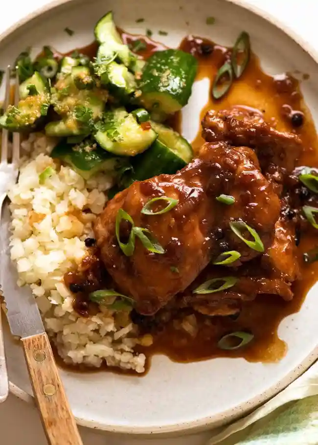

Home
Chicken Adobo

Description
Philippine adobo is a popular Filipino dish and cooking process in Philippine cuisine that involves meat, seafood, or vegetables marinated in vinegar, soy sauce, garlic, bay leaves, and black peppercorns, which is browned in oil, and simmered in the marinade.
Ingredients
CHICKEN AND MARINADE
- 750g / 1.5lb chicken thigh fillets
- 3 garlic cloves
- 1/3 cup (85ml) soy sauce
- 1/3 cup + 2 tbsp white vinegar
- 4 bay leaves (fresh) or 3 dried
FOR COOKING
- 2tbsp oil
- 3 garlic cloves
- 1 small brown onion
- 1 1/2 cups (375 ml) water
- 2 tbsp brown sugar
- 1 tbsp whole black pepper
SERVING
Steps
- Combine Chicken and Marinade ingredients in a bowl. Marinate for at least 20 minutes, or up to overnight.
- Heat 1 tbsp oil in a skillet over high heat. Remove chicken from marinade (reserve marinade) and place in the pan. Sear both sides until browned – about 1 minute on each side. Do not cook the chicken all the way through.
- Remove chicken skillet and set aside.
- Heat the remaining oil in skillet. Add garlic and onion, cook 1 1/2 minutes.
- Add the reserved marinade, water, sugar and black pepper. Bring it to a simmer then turn heat down to medium high. Simmer 5 minutes.
- Add chicken smooth side down. Simmer uncovered for 20 to 25 minutes (no need to stir), turning chicken at around 15 minutes, until the sauce reduces down to a thick jam-like syrup.
- If the sauce isn't thick enough, remove chicken onto a plate and let the sauce simmer by itself - it will thicken much quicker - then return chicken to the skillet to coat in the glaze.
- Coat chicken in glaze then serve over rice. Pictured in post as a healthy dinner plate (415 calories) with cauliflower rice and Ginger Smashed Cucumbers.